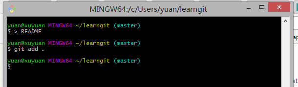
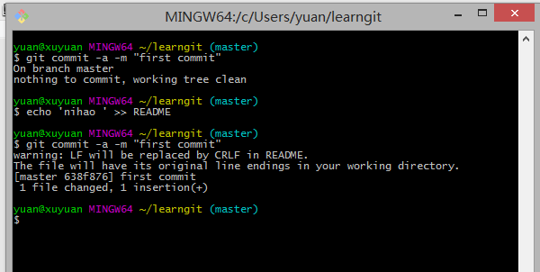

Git Bash命令行的常用操作, git官网，git bash命令行的功能很强大，常用的指令全能在此执行。
关于git的工作原理, 没有比git官网上的解释更清楚详细的(git官方文档), 一下是个人归纳总一些常用方法, 掌握这些基本可以完成对项目的版本控制
git init 运行git bash, 并cd 到相应的目录下, 输入一下命令
git init
这样一个git repository就生成了, 我们可以顺便看看刚生成的库,在当前目录下有没有发生什么,ls -a
与此同时我们会发现在我们的学习目录后多了(master),这表示我们当前所在的分支(branch)是主分支master；
git branch 'your branch name'此时我们建立一个新的分支，命名为 me ，我们在git命令行里输入git branch me ，结果会报错；错误提示是没有一个有效的名为master对象，在此之前我们有给这个repository添加内容
这个出错暂时不说解决方法，先卖个关子>_<。
git add 在当前目录下建立一个新文件，命名README, 利用命令新建文件的方法有很多种
> README
git add . ：他会监控工作区的状态树，使用它会把工作时的所有变化提交到暂存区，包括文件内容修改(modified)以及新文件(new)，但不包括被删除的文件。
git add -u ：他仅监控已经被add的文件（即tracked file），他会将被修改的文件提交到暂存区。add -u 不会提交新文件（untracked file）。（git add --update的缩写）
git add -A ：是上面两个功能的合集（git add --all的缩写）
git add 'path': 指定添加某个被修改的文件，或新建的文件
git commit git commit -a -m 'first commit'
如果我们这里不用-m参数的话，git将调到一个文本编译器（通常是vim）来让你输入提交的描述信息 可能一天下来，你对工作树中的许多文档都进行了更新（文档添加、修改、删除），但是我忘记了它们的名字，此时若将所做的全部更新添加到索引中，比较轻省的做法就是：
git commit 命令的-a 选项可只将所有被修改或者已删除的且已经被git管理的文档提交倒仓库中。如果只是修改或者删除了已被Git 管理的文档，是没必要使用git add 命令的。
若我们没有对所提交的内容进行任何修改或变动，提示 ‘On branch master nothing to commit, working tree clean’
git branch报错当提交成功后，再运行git branch，用git checkout me切换到'me'分支
切换到不同的分支是为了能更好的进行版本控制，便于在不同版本之间来回切换